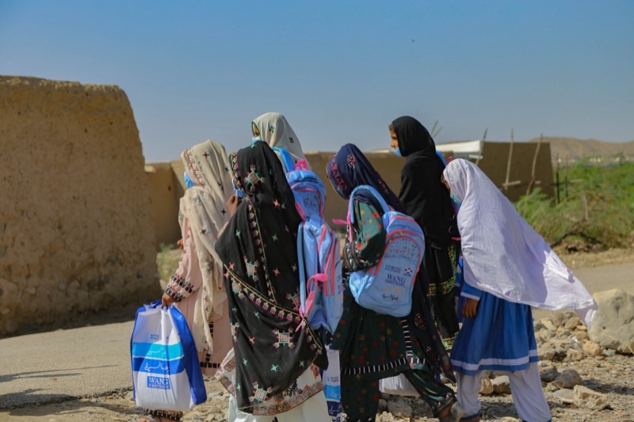
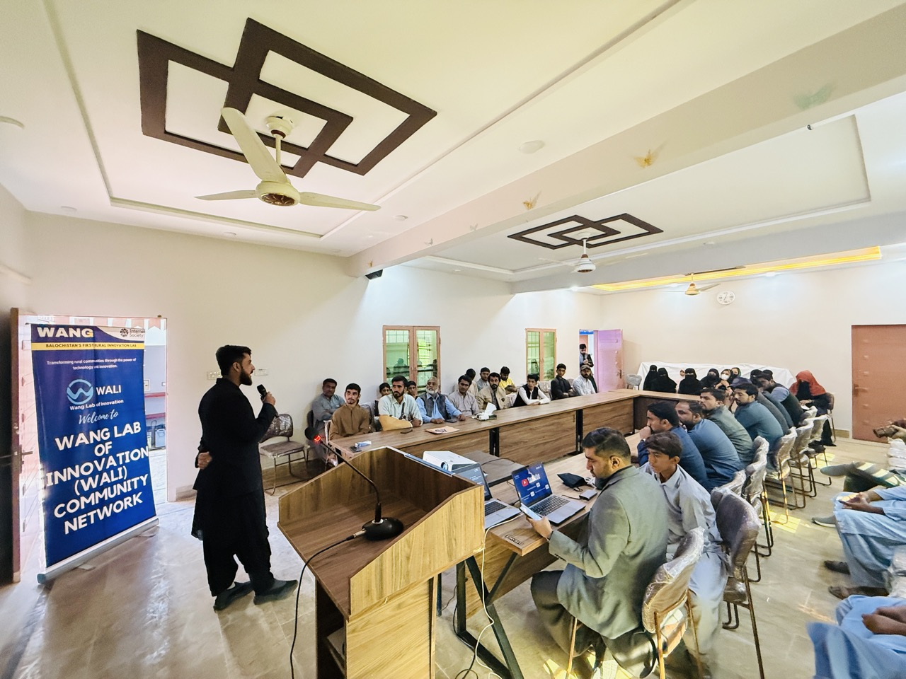

COVID-19 made the divide visible
Thousands of students in Balochistan were locked out of online classes because they lacked both digital skills and reliable internet access. That gap is one of the reasons WANG exists.
About WANG
WANG (We Are New Generation) is a registered non-profit in Pakistan. Community-led work began in 2012 from Ahmed Abad Wang; the WALI innovation lab was established in 2021 to bridge the digital divide with technology-driven programs for communities that are usually left last.

Our story
The education crisis during COVID-19 exposed how impossible a successful future becomes when digital literacy and reliable internet are missing in rural Pakistan.
Thousands of students in Balochistan were locked out of online classes because they lacked both digital skills and reliable internet access. That gap is one of the reasons WANG exists.
The divide affects agriculture, livelihoods, social inclusion, and the ability of communities to participate in the digital world on fair terms.
Building in Bela keeps the work close to real community conditions instead of designing from a distance and hoping it translates later.
WANG’s public story begins in 2012 with grassroot programs in Lasbela; the first public website followed in 2014 (see the Welcome Blog). Today it operates as a registered non-profit; WALI (2021) is the innovation lab that delivers camps and field programs in Lasbela.

The WANG model
WANG's structure links registered non-profit accountability with local delivery and national-scale products, ensuring that rural insights become public systems.
WANG provides the foundation: public registration, accountability, field relationships, girls' access, and long-term community trust that only a registered non-profit can create.
WALI is the working lab: digital literacy camps, youth pathways, AI learning, enterprise support, and local experimentation happen close to the people they are meant to serve in Lasbela, Balochistan.
The initiatives scale nationally: Urdu AI, PakSpeed, PakEducate, WIRE, and Darwaza turn rural insight into usable tools, public platforms, and systems that can travel far beyond Balochistan.
Legal identity
Welfare Association for New Generation (WANG)
Registered under the Balochistan Charities Act (BCRA), Societies Registration Act, and Voluntary Social Welfare Agencies Act (VSWA).
NTN: 7426613 — National Tax Number registered with the Federal Board of Revenue, Pakistan.
Ahmed Abad Wang, Bela, District Lasbela, Balochistan, Pakistan 90050. The WALI innovation lab operates from this location.
Governance & structure
Strategic oversight, fiduciary responsibility, and governance direction. The Board approves annual plans, budgets, and major partnerships.
Qaisar Roonjha — founder and executive lead. Oversees all six initiatives, partner relationships, and organizational strategy. Team roster.
Directors of Programs and WALI Lab lead field execution: digital literacy camps, WIRE women’s workshops, climate resilience, scholarship distribution, and Urdu AI Dost network deployment across 29 districts.
Financial controls, statutory filings, donor compliance, and audit preparation. Banking and compliance commitments maintained in line with BCRA and VSWA frameworks.
Public documentation, media relations, digital platforms, and partner reporting. This site, Urdu AI, and social channels serve as the primary transparency tools.
Program outcomes are publicly documented through impact metrics, annual report summary, third-party media coverage, and external awards with primary sources.
Next pages
The strongest way to understand WANG is to move from mission into initiatives, impact, and the people responsible for the work.